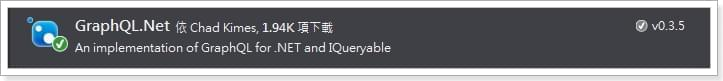
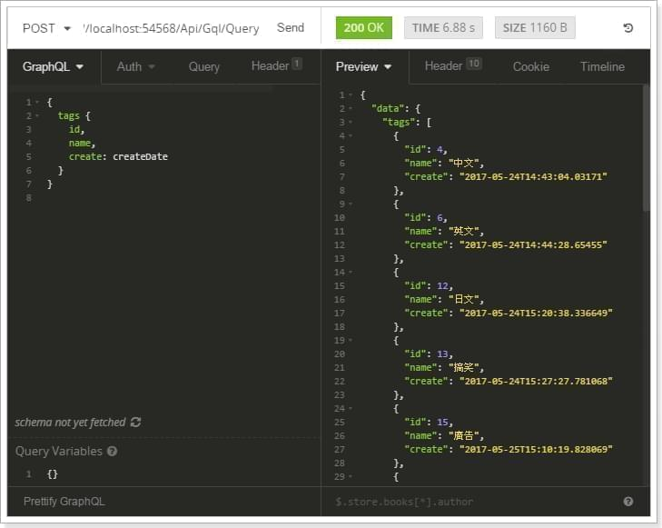
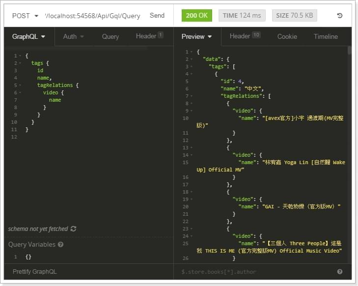
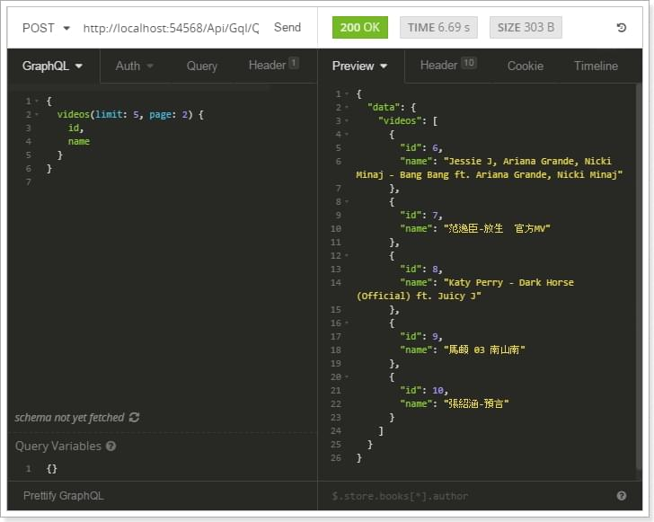
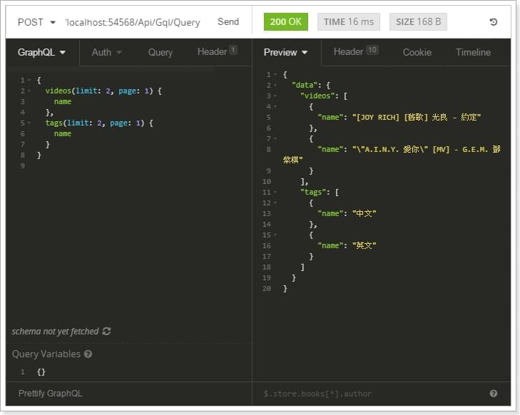

聽說「GraphQL」解決了RESTful的各種問題，而且還是大名鼎鼎的Facebook出品，這篇文章就來實際搞玩看看，使用我現有的Web服務之DB套上GraphQL，並實作API，看看能不能迸出什麼火花💥
GraphQL簡介
從官方看起來應該就是API的Query語言，特色是擁有非常強大的查詢功能。
在.NET、C#實現GraphQL
多數不同的程式語言都已經有人實現了GraphQL Library，.NET在官方網站上共列出了兩個，這裡就挑其中一個較符合本篇主題的類別庫來做測試。
graphql-net: Convert GraphQL to IQueryable
使用Nuget安裝套件

建立GraphQL API Controller
1 | public class GqlController : ApiController |
建立Schema
在此套件中，想用GraphQL獨有的Query對DB做存取，需要先將原有的DbContext轉成Schema。
1 | Schema = GraphQL<ApplicationDbContext>.CreateDefaultSchema(() => new ApplicationDbContext()); |
建立Schema Type
依照實務需求或安全性考量，資料庫中的特定資料表或資料表內的特定欄位是不允許被查詢後顯示的，這時可以使用Schema.AddType<T>()定義允許的資料表，與使用AddField()定義允許的欄位，但本篇練習沒這層考量，所以我在這直接使用Schema.AddType<T>().AddAllFields()直接允許所有欄位；以下共添加三張資料表，分別是影片表VideoTable、標籤表TagTable、影片標籤關係表TagRelationTable。
1 | Schema.AddType<VideoTable>().AddAllFields(); |
建立Schema Field
定義GraphQL API傳遞給後端的Query，下面分別是查詢影片與查詢標籤，如果沒有定義的話是會出現SchemaRoot錯誤的喔。
1 | Schema.AddListField("videos", db => db.Videos); |
完成基礎設置
1 | Schema.Complete(); |
建立Controller Action
後端要寫的東西基本上就到此為止了！只要將傳入的Query使用ExecuteQuery()執行，就可以得到查詢結果了，所以說，要建一個GraphQL API一點都不難呢😁
1 | public object Query() { |
測試API
到底它會對於我們的API有什麼幫助呢？下面我做了幾個簡單的範例，來幫助大家瞭解它如何運作。
Queries
API使用者可以指定需要的欄位，還可以修改回傳的欄位名稱。下圖為查詢標籤表中的id、name、createDate欄位，並把createDate指定回傳名稱為create。

巢狀資料也難不倒GraphQL。下圖為找出標籤下的影片，並顯示影片的name欄位。

資料分頁也是輕輕鬆鬆。下圖為找出影片，取5筆的第2頁。

一次搜尋多張資料表。下圖為查詢影片與標籤。

結語
GraphQL還有許多功能，像是新增、修改、刪除的Mutations…等，但我現階段查閱資料，發現套件的支援度還不是太完整，希望未來有機會可以再對這篇文章進行補充，但以目前的查詢功能來說，是不是已經可以達到減少客製化API的需求、讓API使用者更彈性的對DB進行Query了呢，你也一起來玩玩看吧😘